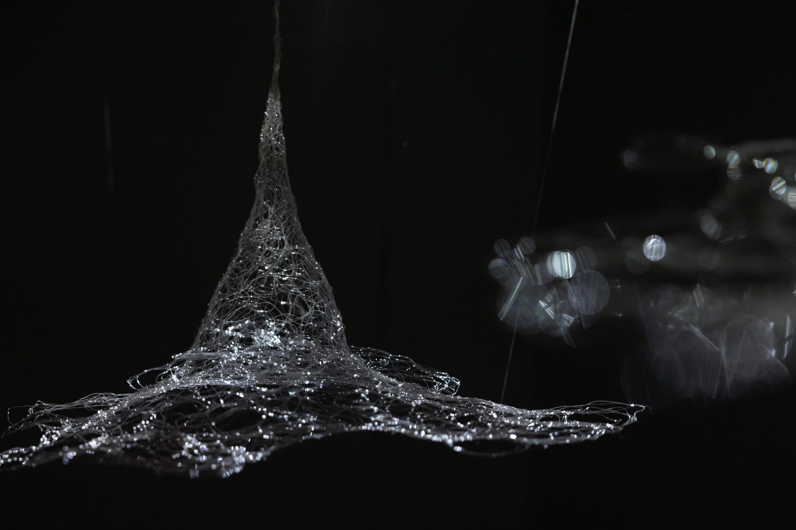
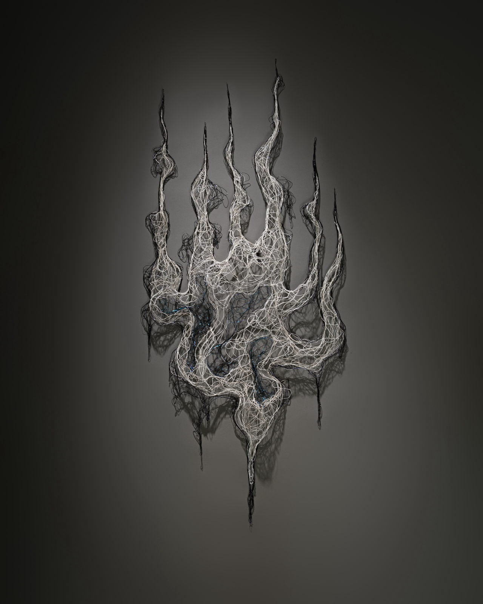
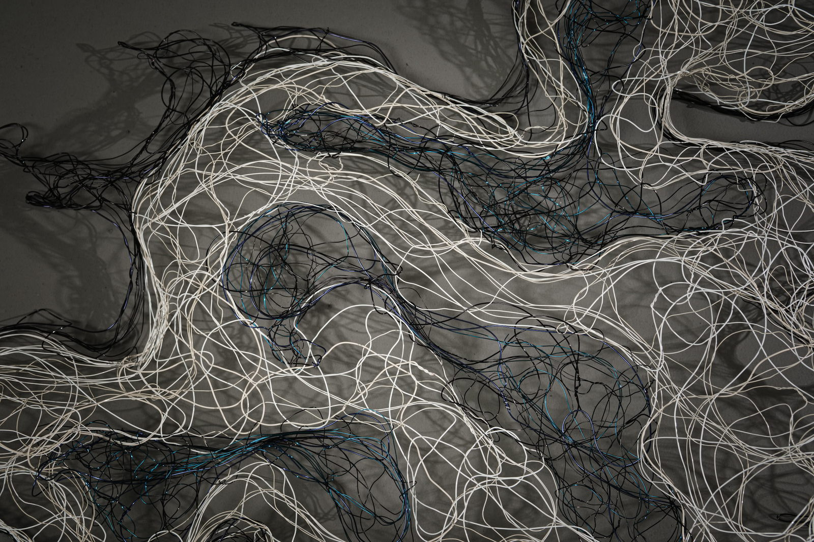
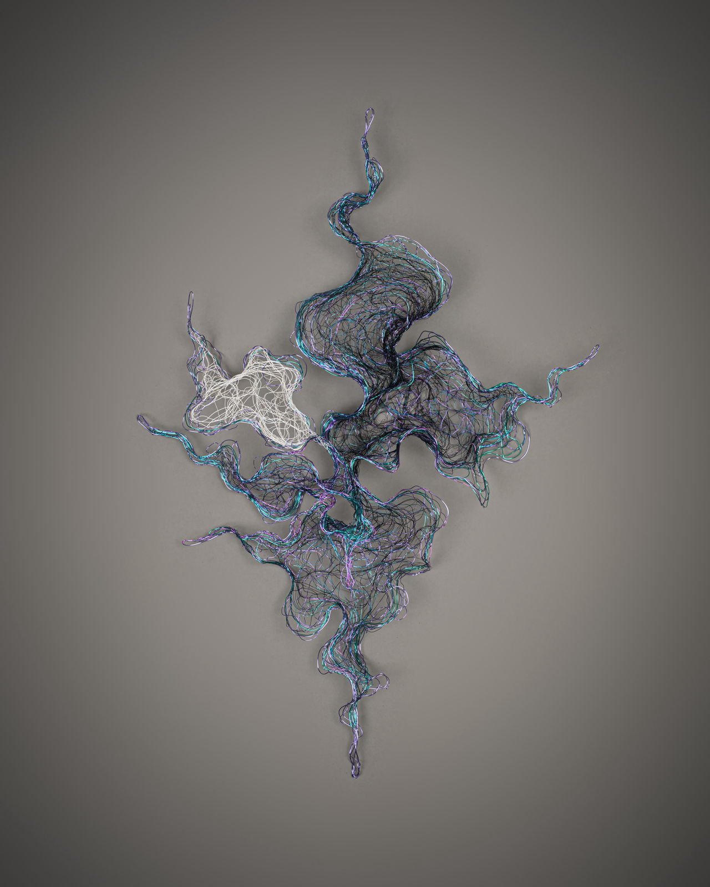

Selected excerpts from the group exhibition curatorial text.
RIVER ART GALLERY will hold the new group show “Airy Disk,” featuring six artists, including Korean artist Lili Lee, Polish artist Magdalena Gluszak – Holeksa who makes her debut in Taiwan, Chinese artists Amy Hui Li and Xinran Liu who studied art in the UK, as well as the highly acclaimed Taiwanese artist Julia Hung and Japanese artist Tomoko Hasuwa. The show will delve into layers of visual perception through diverse perspectives, inviting viewers to journey through different images into a rich, spiritual dimension, thereby resonating with their own spectrum of life and finding moments of familiarity.
The Airy disk, a fundamental concept in all optical systems, is an element we encounter every day as soon as we open our eyes. The human eye is essentially like a lens of a certain size, and when light enters the eye, it inevitably produces countless Airy Disks on the retina. These Airy Disks, when superimposed upon each other, form the unforgettable images in our brains. Though an optical phenomenon, the Airy disk also possesses a certain “physicality.” The process of overall interaction leading to the output and transmission to the brain involves subtle emotions and physical memories. This show highlights artists as the eyes of people, perceive and experience the world from different angles, like various lenses, slicing through bodily incisions, the nuances of inner emotions, and even many aspects of life and social issues. They then combine these fragments of memory or fleeting glimpses of everyday life, transcending sensory levels and elevating to the inner spiritual realm.
In the final area, Taiwanese artist Julia Hung, who has recently garnered considerable attention, presents her unique installation works. The overall color scheme is centered around white, representing the collection of all colors of light, and black, absorbing all visible light. Combined with other works in cool tones and projection installations, the show embodies spiritual depth akin to water, not only retaining its intrinsic essence but also containing the philosophical concept of mutual generation and interchange from Taoist.
Mystic
Julia Hung's organic and drawing-like copper wire weaving series "Mystic 玄 (Xuan)" explores the fluidity between the visible and invisible, and between being and nothingness.
In Taoist philosophy, the concepts of "nothingness 無 (wu)" and "being 有 (you)" are expressed differently but originate from the same source and are collectively referred to as "mystic 玄 (Xuan).” Although being and nothingness seem opposite, they are actually interchangeable and interdependent, much like how white is hidden within white and revealed in black, and vice versa.
Through the use of black and white and the interplay of light and shadow, the artist defines and dissolves the forms of her works within space, flowing between the visible and the invisible. This also embodies the coexisting nature of being and nothingness, highlighting how perception is constantly being shaped and reshaped.